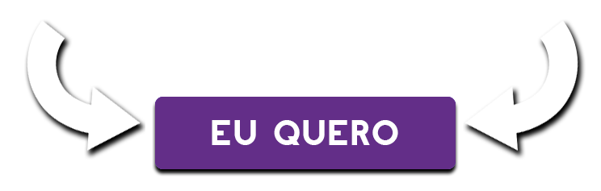
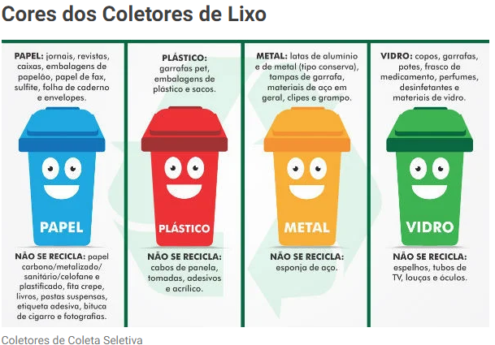

Quero entender mais sobre descarte sustentável

Coleta Seletiva
A Coleta Seletiva é um mecanismo de recolha dos resíduos, os quais são classificados de acordo com sua origem e depositados em contentores indicados por cores.
Ou seja, eles podem ser resíduos orgânicos ou materiais recicláveis como papel, plástico, vidro, dentre outros. Além deles, materiais hospitalares e radioativos têm um destino diferente.

Segundo a Resolução do CONAMA (Conselho Nacional do Meio Ambiente) N.º 275/2001, foi estabelecido um código de cores para diferentes tipos de resíduos na coleta seletiva. Assim, no padrão das cores dos contentores os materiais que cada um deles recebe são:
- Azul: papéis e papelões;
- Verde: vidros;
- Vermelho: plásticos;
- Amarelo: metais;
- Marrom: resíduos orgânicos;
- Preto: madeiras;
- Cinza: materiais não reciclados;
- Branco: lixos hospitalares;
- Laranja: resíduos perigosos;
- Roxo: resíduos radioativos.